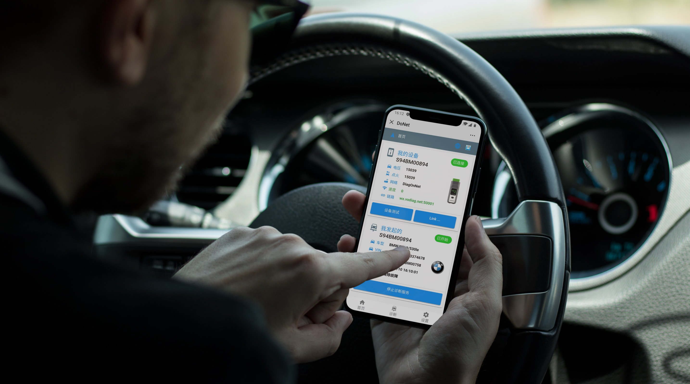
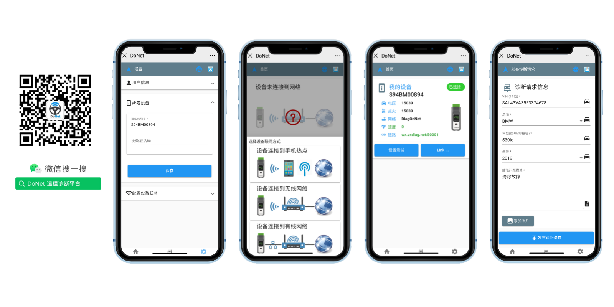

Remote Diagnosis Introduction

DoNet Remote Diagnosis，is based on cloud computing and5GCommunicationreal-time remote vehicle diagnosis platform。Users use M-Auto VCI diagnostic device，via DoNet WeChatsignalMalepublicnumberPlatform，thenachievefaultVehicle(Client C) withrepaircompanyortechnical experts(Server S)interconnection。
Through this platform, workshops and end-customers lacking technical skills or equipment can seek remote expert assistance. Repair companies and experts can offer diagnosis, coding and programming services to any customer, regardless of location.
Remote Diagnosisgroupswitch to
ClientandServer
The client (C) is the party seeking remote diagnosis for a faulty vehicle.
The server (S) is the party providing remote diagnosis service.
M-Auto VCI SE Remote DiagnosisDevice
The M-Auto VCI SE is M-Auto's latest generation diagnostic device for the remote diagnosis platform.

Highly integrated hardware with KWP/CAN/DoIP bus protocols, WiFi/USB/LAN interfaces and mature J2534/PDU drivers for all OEM diagnostics. Supports local diagnosis and one-click remote platform access.
Both server (S) and client (C) can use the same M-Auto VCI SE. Existing M-Auto VCI DoIP devices can also be enabled for remote diagnosis.
DoNet Remote DiagnosisWeChatsignalMalepublicnumber

The DoNet WeChat channel (DiagnosisOnNet) is an online remote diagnosis platform by M-Auto. Users bind M-Auto VCI devices, configure networking, check device status; client (C) users post requests, server (S) users accept remote service jobs.
DualModeRemote Diagnosis
DoNet innovatively supports two remote diagnosis modes: Hyper Remote Diagnosis and Legacy Remote Diagnosis.
Hyper Remote Diagnosis

Hyper mode requires only a single client M-Auto VCI device for multi-brand OEM software direct-connect remote diagnosis.
The client (C) connects the M-Auto VCI to the faulty vehicle and configures networking via the WeChat channel.
The server (S) needs no device. With OEM software PC, load remote PDU/J2534 drivers to directly access the remote vehicle for OEM diagnosis, coding and programming.
Hyper Remote DiagnosisFeatures
- [Supports ~20 brands including Mercedes-Benz, BMW, Porsche, VW, Audi, Land Rover, GM, Ford, Toyota, Honda, Subaru, Volvo and more.…]
- [Deep OEM software support — remote diagnosis capabilities match local diagnosis.…]
- [Supports DoIP remote diagnosis with vehicle ethernet mapped directly to the server.…]
- [Server only needs account and certificate resources for remote online coding and programming for any client.…]
Compatible Remote Diagnosis

Legacy mode uses 1 M-Auto VCI device on each side for remote diagnosis with any brand device.
The client (C) connects the M-Auto VCI to the faulty vehicle, configures networking and initiates a diagnosis request via WeChat.
The server (S) powers the M-Auto VCI via an OBD adapter and configures networking. It can use any OEM or third-party device via OBD to provide the service.
Compatible Remote DiagnosisFeatures
- [Server can use any diagnostic device: OEM tools, generic scanners, immobilizer tools, TPMS, tuning tools, etc.…]
- [Legacy remote diagnosis currently supports CAN and DoIP protocols.…]
- [Supports all vehicles using CAN and DoIP.…]
Remote DiagnosisUsageGuide
 Hyper Remote Diagnosis Guide
Hyper Remote Diagnosis Guide Legacy Remote Diagnosis Guide
Legacy Remote Diagnosis GuideRemote Diagnosiscases
 Remote Diagnosis Programming Cases
Remote Diagnosis Programming CasesopenTest
currently DoNet Hyper Remote DiagnosisFeaturesalreadyalreadyFullcoverageopen， Compatible Remote DiagnosisFeaturesalsoalreadyopenTest，Welcome！